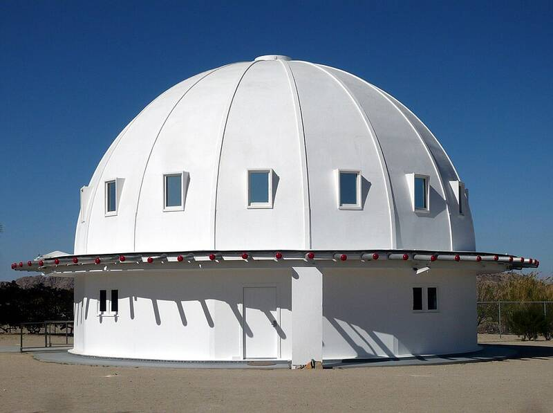

The Integratron
Landers, California

A domed building George Van Tassel began in 1954 near Giant Rock, where he hosted the Giant Rock Interplanetary Spacecraft Convention from 1953 to 1971. He described it as a structure for research into rejuvenation, time and anti-gravity. It was never finished; he died in 1978, weeks before its planned opening. 1,2
Open in the interactive Watcher
Related
- George Van Tassel Person
Sources
- Integratron Wikipedia
- George Van Tassel Wikipedia